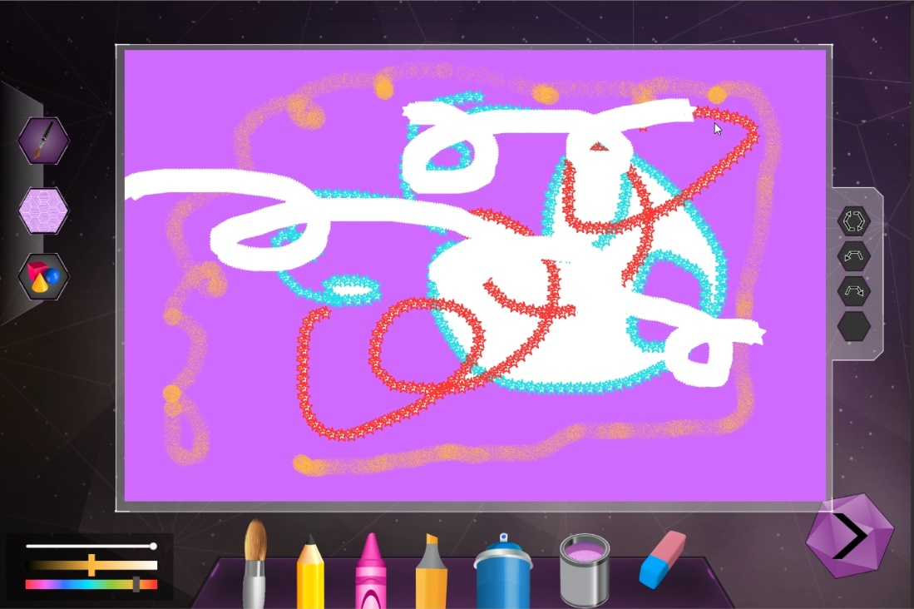

Back to Portfolio
Arts and Crafts
A Unity-based drawing application featuring a custom high-performance C++ native plugin.
Optimization
C++ Native Plugin Integration
The core challenge of this project was implementing a responsive and efficient fill algorithm. Initial attempts in C# were insufficient for large-area fills, leading to noticeable performance bottlenecks.
To solve this, I transitioned the algorithm to a C++ Native Plugin. This shift provided the necessary low-level performance boost, making the fill algorithm significantly faster and allowing for the implementation of additional complex features directly in C++.
